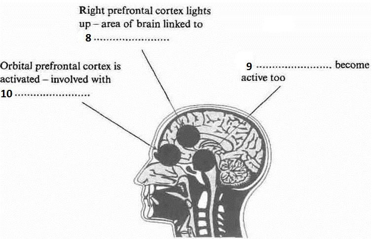

Recent research on humour

The joke comes over the headphones: 'Which side of a dog has the most hair? The left.'
No, not funny. Try again. Which side of a dog has the most hair? The outside.' Hah! The punchline is silly yet fitting, tempting a smile, even a laugh. Laughter has always struck people as deeply mysterious, perhaps pointless. The writer Arthur Koestler dubbed it the luxury reflex: ‘unique in that it serves no apparent biological purpose'.
Theories about humour have an ancient pedigree. Plato expressed the idea that humour is simply a delighted feeling of superiority over others. Kant and Freud felt that joke-telling relies on building up a psychic tension which is safely punctured by the ludicrousness of the punchline. But most modern humour theorists have settled on some version of Aristotle's belief that jokes are based on a reaction to or resolution of incongruity, when the punchline is either a nonsense or, though appearing silly, has a clever second meaning.
Graeme Ritchie, a computational linguist in Edinburgh, studies the linguistic structure of jokes in order to understand not only humour but language understanding and reasoning in machines. He says that while there is no single format for jokes, many revolve around a sudden and surprising conceptual shift. A comedian will present a situation followed by an unexpected interpretation that is also apt
So even if a punchline sounds silly, the listener can see there is a clever semantic fit and that sudden mental 'Aha!' is the buzz that makes us laugh. Viewed from this angle, humour is just a form of creative insight, a sudden leap to a new perspective.
However, there is another type of laughter, the laughter of social appeasement and it is important to understand this too. Play is a crucial part of development in most young mammals. Rats produce ultrasonic squeaks to prevent their scuffles turning nasty. Chimpanzees have a 'play-face' - a gaping expression accompanied by a panting 'ah, ah' noise. In humans, these signals have mutated into smiles and laughs. Researchers believe social situations, rather than cognitive events such as jokes, trigger these instinctual markers of play or appeasement. People laugh on fairground rides or when tickled to flag a play situation, whether they feel amused or not.
Both social and cognitive types of laughter tap into the same expressive machinery in our brains, the emotion and motor circuits that produce smiles and excited vocalisations. However, if cognitive laughter is the product of more general thought processes, it should result from more expansive brain activity.
Psychologist Vinod Goel investigated humour using the new technique of 'single event' functional magnetic resonance imaging (fMRI). An MRI scanner uses magnetic fields and radio waves to track the changes in oxygenated blood that accompany mental activity.
Until recently, MRI scanners needed several minutes of activity and so could not be used to track rapid thought processes such as comprehending a joke. New developments now allow half-second 'snapshots' of all sorts of reasoning and problem-solving activities.
Although Goel felt being inside a brain scanner was hardly the ideal place for appreciating a joke, he found evidence that understanding a joke involves a widespread mental shift. His scans showed that at the beginning of a joke the listener's prefrontal cortex lit up, particularly the right prefrontal believed to be critical for problem solving. But there was also activity in the temporal lobes at the side of the head (consistent with attempts to rouse stored knowledge) and in many other brain areas. Then when the punchline arrived, a new area sprang to life - the orbital prefrontal cortex. This patch of brain tucked behind the orbits of the eyes is associated with evaluating information.
Making a rapid emotional assessment of the events of the moment is an extremely demanding job for the brain, animal or human. Energy and arousal levels may need to be retuned in the blink of an eye. These abrupt changes will produce either positive or negative feelings. The orbital cortex, the region that becomes active in Goel's experiment, seems the best candidate for the site that feeds such feelings into higher-level thought processes, with its close connections to the brain's sub-cortical arousal apparatus and centres of metabolic control.
All warm-blooded animals make constant tiny adjustments in arousal in response to external events, but humans, who have developed a much more complicated internal life as a result of language, respond emotionally not only to their surroundings, but to their own thoughts. Whenever a sought-for answer snaps into place, there is a shudder of pleased recognition. Creative discovery being pleasurable, humans have learned to find ways of milking this natural response. The fact that jokes tap into our general evaluative machinery explains why the line between funny and disgusting, or funny and frightening, can be so fine. Whether a joke gives pleasure or pain depends on a person's outlook.
Humour may be a luxury, but the mechanism behind it is no evolutionary accident. As Peter Derks, a psychologist at William and Mary College in Virginia, says: 'I like to think of humour as the distorted mirror of the mind. It's creative, perceptual, analytical and lingual.
If we can figure out how the mind processes humour, then we'll have a pretty good handle on how it works in general.'
Questions 1-7
Do the following statements agree with the information given in Reading Passage ?
In boxes 1-7 on your answer sheet, write
TRUE if the statement agrees with the information
FALSE if the statement contradicts the information
NOT GIVEN if there is no information on this
1 Arthur Koestler considered laughter biologically important in several ways.
2 Plato believed humour to be a sign of above-average intelligence.
3 Kant believed that a successful joke involves the controlled release of nervous energy.
4 Current thinking on humour has largely ignored Aristotle's view on the subject.
5 Graeme Ritchie’s work links jokes to artificial intelligence.
6 Most comedians use personal situations as a source of humour.
7 Chimpanzees make particular noises when they arc playing.
Questions 8-10
The diagram below shows the areas of the brain activated by jokes.
Label the diagram.
Choose NO MORE THAN TWO WORDS from the passage for each answer.
Write your answers in boxes 8-10 on your answer sheet.

8
9
10
Questions 11-14
Complete each sentence with the correct ending A-G below.
Write the correct letter A-G in boxes 11-14 on your answer sheet.
A react to their own thoughts.
B helped create language in humans.
C respond instantly to whatever is happening.
D may provide valuable information about the operation of the brain. E cope with difficult situations.
F relate to a person’s subjective views.
G led our ancestors to smile and then laugh.
11 One of the brain’s most difficult tasks is to
12 Because of the language they have developed, humans
13 Individual responses to humour
14 Peter Derks believes that humour
---End of the Test---
Please Submit to view your score, solution and explanations.